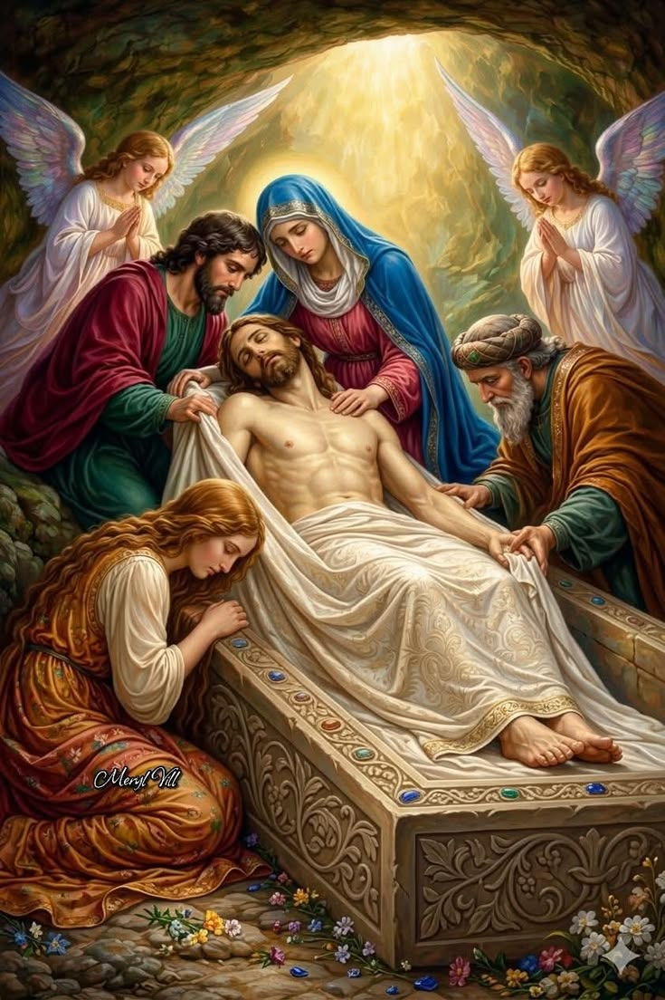

Le Chemin de Croix
Un chemin de méditation à travers les quatorze stations qui retracent les moments importants de la Passion du Christ.
Commencer le Chemin de CroixQu'est-ce que le Chemin de Croix ?

Un parcours de méditation
Le Chemin de Croix est une tradition chrétienne qui invite à méditer sur les différentes étapes de la Passion de Jésus-Christ.
Il comprend généralement 14 stations. Chaque station représente un moment particulier du chemin parcouru par Jésus vers sa crucifixion.
Ce parcours est un moment de prière, de réflexion et de recueillement.
Voir les 14 stations →Qu'est-ce que le Chemin de Croix ?

Un parcours de méditation
Le Chemin de Croix est une tradition chrétienne qui invite à méditer sur les différentes étapes de la Passion de Jésus-Christ.
Il comprend généralement 14 stations. Chaque station représente un moment particulier du chemin parcouru par Jésus vers sa crucifixion.
Ce parcours est un moment de prière, de réflexion et de recueillement.
Voir les 14 stations >